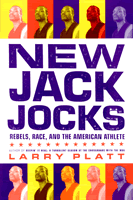

<body bgcolor="#FFFFFF" text="#000000" link="#0000FF" vlink="#CC0000" alink="#CC0000"><center><hr width="350" size="1" align="center" noshade>The hero and anti-hero in contemporary sport, from a best-selling journalist<hr width="350" size="1" align="center" noshade><p><a href="https://cdcshoppingcart.uchicago.edu/Cart/ChicagoBook.aspx?ISBN=9781566399548&&PRESS=temple" target="_top">Buy this book!</a> | <a href="https://cdcshoppingcart.uchicago.edu/Cart/Cart.aspx?PRESS=temple" target="_top">View Cart</a> | <a href="https://cdcshoppingcart.uchicago.edu/Cart/Cart.aspx?PRESS=temple" target="_top">Check Out</a></p><p></p></center><!--none//--><h1>New Jack Jocks</h1>
<H2>Rebels, Race, and the American Athlete</H2>
<h3>Larry Platt</h3>
<P>cloth 1-56639-954-8 $59.50, Apr 02, <FONT COLOR=#990033>Available</FONT>
<br>paper 1-59213-191-3 $25.95, Sep 03, <FONT COLOR=#990033>Available</FONT>
<br>Electronic Book 1-43990-730-7 $25.95 <FONT COLOR=#990033>Available</FONT>
<BR> 208 pp
5.5x8.25
</P><BLOCKQUOTE><I>"Larry Platt's writing flies two places at once: inside America's sports heroes and high above them, gazing down on the strange dynamic between us and them. You won't be able to look at our athletes or our society the same after you've read Platt."</I>
<br>&#151<b>Gary Smith</b>, <I>Sports Illustrated</I><I></I></BLOCKQUOTE>
<p>Latrell Sprewell. Allen Iverson. John McEnroe. Even Mohammed Ali and Mike Schmidt and Michael Jordan. These are characters of our national imagination, athletes who stand as symbols of our complex relationship with professional sport.
<p>In this erudite and captivating book, bestselling author Larry Platt takes us on a tour through American sports. Offering profiles of the athletes we love (and love to hate), Platt shows that sport, more than any other nationwide pastime, is the way we come to understand&#151and alter&#151race relations, gender, and, most profoundly, how we
communicate with each other in ways that are often given too little credit in the minds of intellectuals.
<p>Thought-provoking and richly written, <I>New Jack Jocks</I> offers a textured picture of how athletes live their lives and how we live out and define American culture by the way we come to understand their lives in and out of the halls of play.
<BR>&nbsp;<h2>Excerpt</h2><P>Excerpt available at <a href="http://www.temple.edu/tempress">www.temple.edu/tempress</a></p>
<BR>&nbsp;<h2>Reviews</h2>
<p><I>"Larry Platt's view of the sports world reads like fiction&#151but it's fact! Writers of sitcoms and soap operas could use </I>New Jack Jocks<I> as a source of great content."</I>
<br>&#151<b>Pat Croce</b>, part owner and former president, Philadelphia 76ers
<p><I>"Like the athletes he profiles, Larry Platt is a renegade in his own right. He has always known that the real stories are found outside the arenas and playing fields, and he tells them with insight and passion. Too bad he still can't go left...."</I>
<br>&#151<b>Gail Shister</b>, <I>Philadelphia Inquirer</I> television columnist and former sportswriter
<p><I>"Larry Platt is a rarity among writers&#151a guy who understands the hip-hop lifestyle of today's athlete. Platt keeps it real; he explains where others judge."</I>
<br>&#151<b>John Lucas</b>, NBA head coach, Cleveland Cavaliers
<p><I>"Few writers get the connection between sports and our public life as well as Larry Platt."</I>
<br>&#151<b>Ed Rendell</b>, former mayor of Philadelphia
<p><I>"Larry Platt is one of the biggest pains in the ass I've had the misfortune of meeting. I can't stand the guy. Unfortunately this is a really good book."</I>
<br>&#151<b>Angelo Cataldi</b>, WIP Radio (Philadelphia) talk show host
<p><I>"...written in a readable style for a variety of ages and audiences."</I>
<br>&#151<b><I>Kliatt</I></b>
<p><i>"Platt tackles a wide range of subjects related to sports in his hometown Philadelphia in an attempt to analyze how fans and media construct and define athletic heroism at the turn of the twenty-first century. ...sports fans of all kinds should find the book to be an enjoyable read..."</i>
<br>&#151<b><i>American Studies</i></b>
<p><i>"Larry Platt's compelling look at the way colorful sports icons live their lives and influence American culture is now available in paperback. The </i>Philadelphia Magazine<i> editor offers insights to the influence of NBA superstars like Allen Iverson and Latrell Sprewell, tennis' former l'enfant terrible John McEnroe, and trendsetters such as Muhammad Ali and Michael Jordan. Thought provoking and richly written, it is reputed to read more like fiction than social commentary.</i>
<br>&#151<b><i>Black Issues in Higher Education</i></b>
<BR>&nbsp;<h2>Contents</h2><P>
<p>Introduction
<p><b>Part I: The New Jack Jock</b>
<br>1. Spree's World
<br>2. Soul Members
<br>3. Pat and Allen's Tough Love Adventure
<p><b>Part II: The Anti-Hero</b>
<br>4. Portrait of an Artist on the Court
<br>5. No Requiem Necessary
<br>6. In the Name of the Father
<br>7. The Unloved
<br>8. The Round Mound Bids Farewell
<p><b>Part III: Entrepreneurs</b>
<br>9. The Graying of Dr. J
<br>10. Magic Johnson Builds an Empire
<br>11. The Business of Rebellion
<br>12. Even the Ball Is White
<br>13. Jelly Maker
<p>Acknowledgments
</P><BR>&nbsp;<H2>About the Author(s)</H2>
<table><tr><td valign="top"><img src="/tempress/authors/1640_au.gif" height="90" width="75"></td><td width="100%" valign="middle"><p><b>Larry Platt</b> is Editor-in-Chief of <i>Philadelphia Magazine</i>. His work has been published in <i>The New York Times Magazine</i>, <i>GQ</i>, <i>Playboy</i>, and <i>Salon. com</i>, among other publications. The author, most recently, of <i>Only the Strong Survive: The Odyssey of Allen Iverson</i>. He lives in the Philadelphia area.</P></td></tr></table>
<BR><H2>Subject Categories</H2>
<p><A HREF="/tempress/sports.html" TARGET="_top">Sports</a>
<BR><A HREF="/tempress/race.html" TARGET="_top">Race and Ethnicity</a>
<BR><A HREF="/tempress/mass_media.html" TARGET="_top">Mass Media and Communications</a>
</p>
<p align="center"><a href="https://cdcshoppingcart.uchicago.edu/Cart/ChicagoBook.aspx?ISBN=9781566399548&&PRESS=temple" target="_top">Buy this book!</a> | <a href="https://cdcshoppingcart.uchicago.edu/Cart/Cart.aspx?PRESS=temple" target="_top">View Cart</a> | <a href="https://cdcshoppingcart.uchicago.edu/Cart/Cart.aspx?PRESS=temple" target="_top">Check Out</a></p><p><font face="Arial" size="1"><a href="copyright.html" onMouseOver="window.status='Web Copyright Policy';return true;" onMouseOut="window.status=''" title="Web Copyright Policy">&copy;</a> 2015 <a href="http://www.temple.edu" target="new" onMouseOver="window.status='Link to Temple University home page';return true;" onMouseOut="window.status=''" title="Link to Temple University home page">Temple University</a>. All Rights Reserved. http://www.temple.edu/tempress/titles/1640_reg.html</font></p>